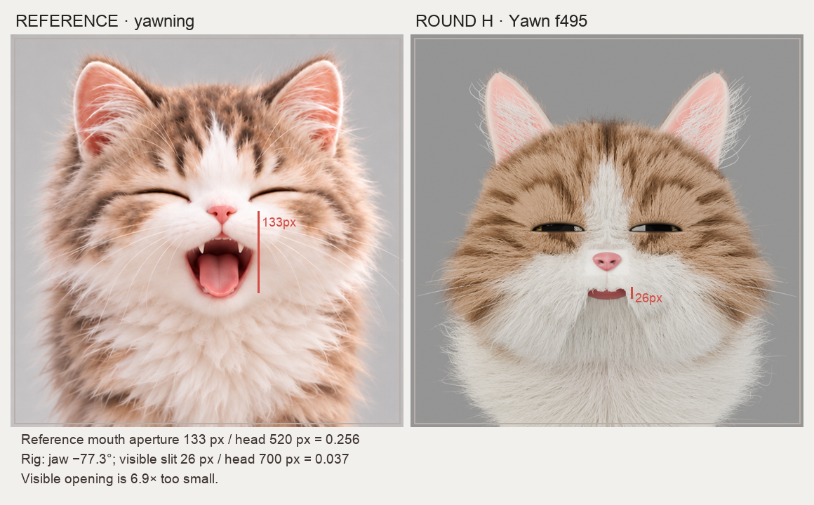
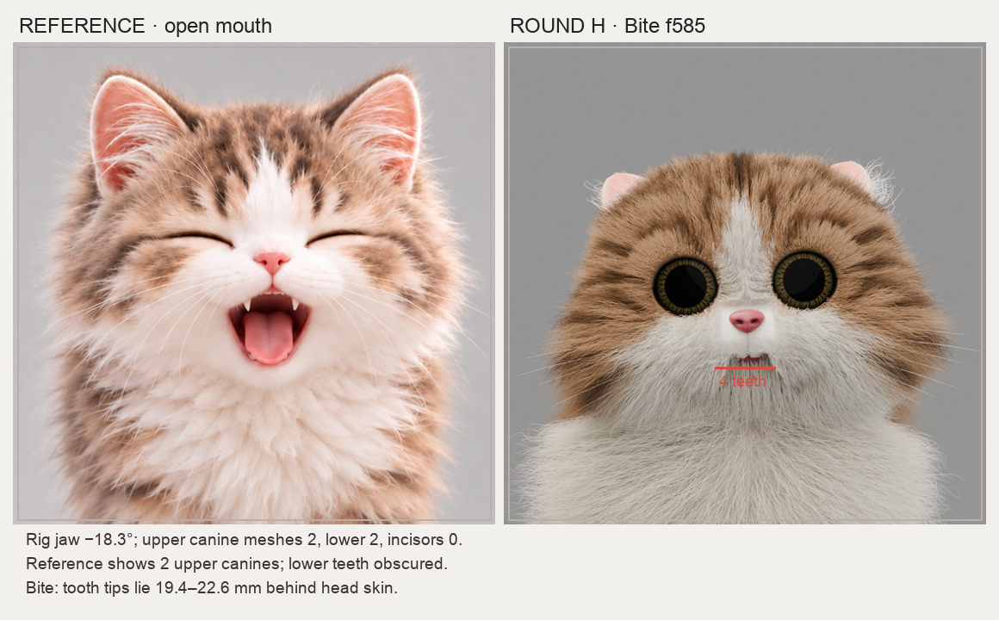
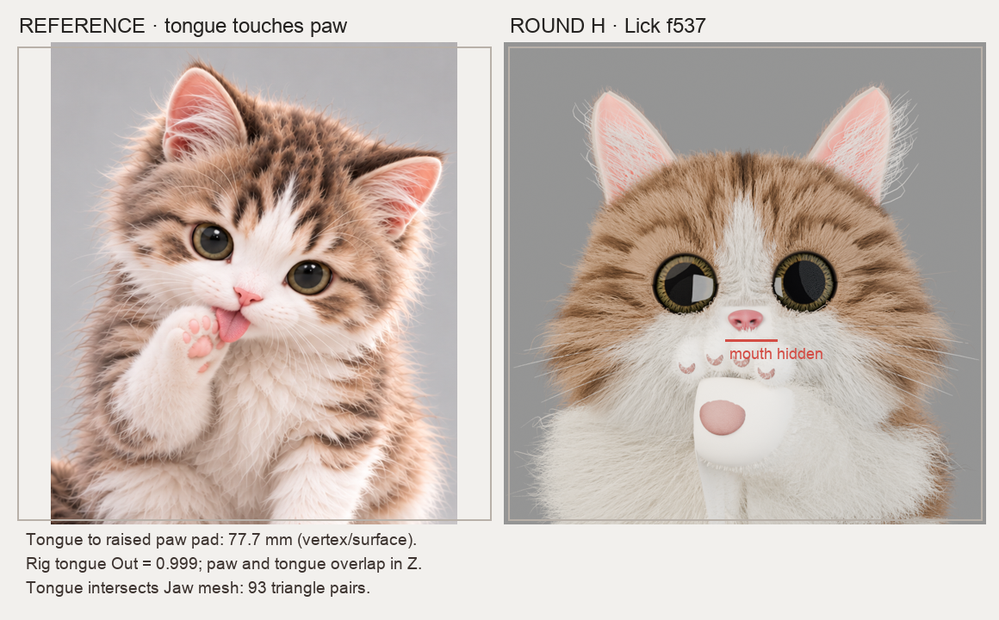
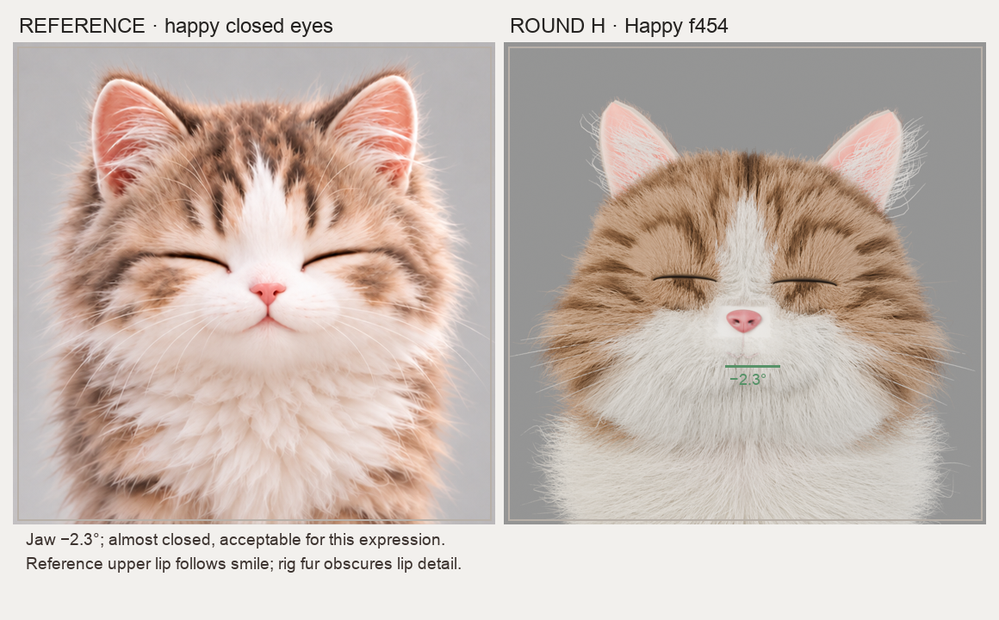
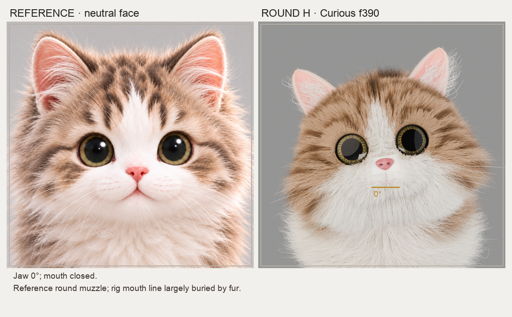
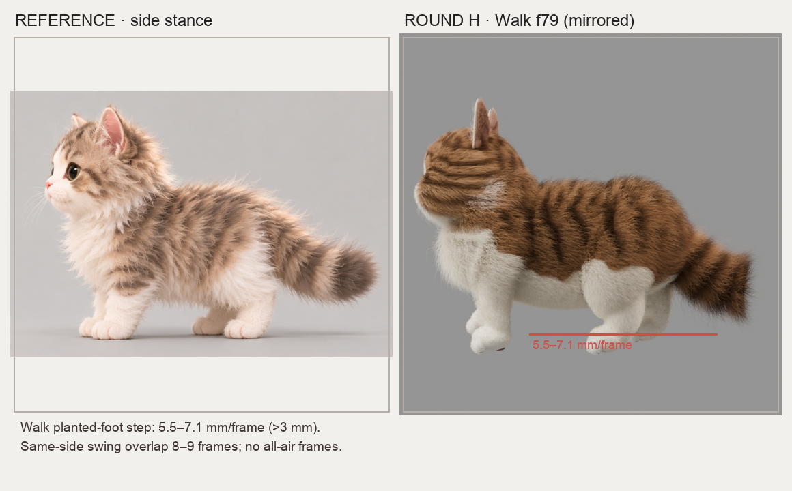
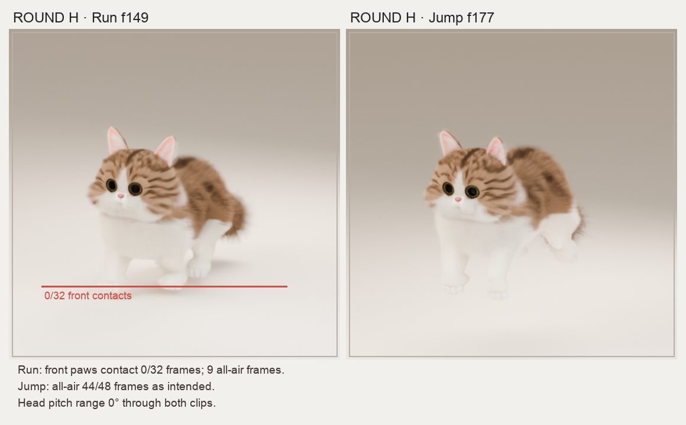
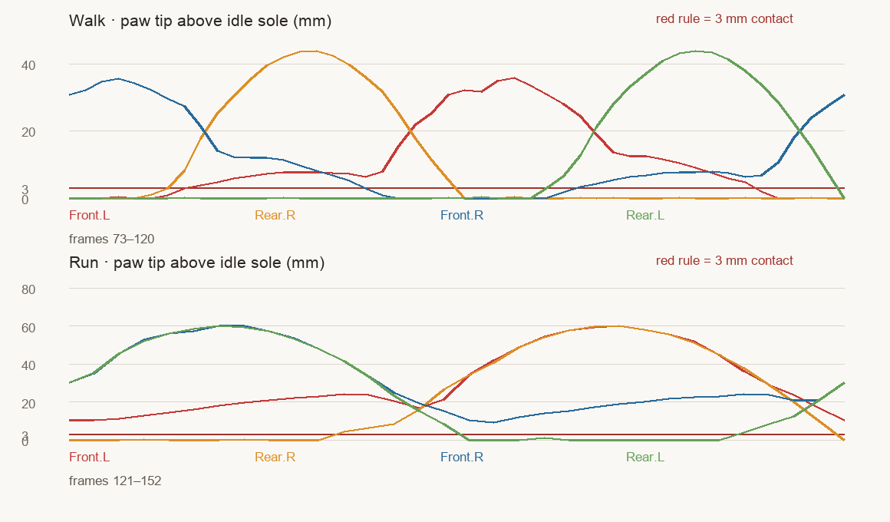
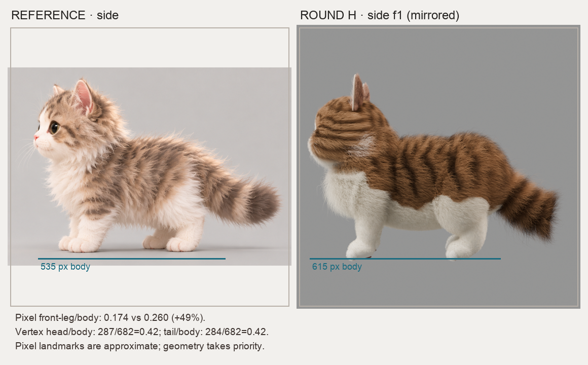

Round H 原始 .blend 审计 · 五个面部动画、Walk / Run / Jump 与参考图。红色为明确错误；黄色为可疑或审美偏差；绿色为可接受。所有测量方法、帧号与局限见 完整报告。

下颌骨旋转 −77.3°，可见开口却约 0.037 个头宽；参考约 0.256，差约 6.9 倍。

下颌 −18.3°。现有上犬齿 2、下犬齿 2、门齿 0；上犬齿尖前方有 14.1–22.6 mm 皮肤，近景看不到牙。

舌形态键 0.999，但近景舌尖被爪遮住；舌尖与前爪到爪垫表面最近约 77.7 mm，舌与下颌有网格相交。

下颌 −2.3°，闭口动作成立。唇线在厚毛下不够清楚。

下颌 0°，闭口成立；口鼻的层次较参考模糊。

支撑脚水平滑移 5.5–7.1 mm/帧，超过 3 mm 阈值；同侧摆动重叠 8–9 帧。

Run 前脚 32 帧都未接地，9 帧四脚同时离地；Jump 的腾空正常，但头部独立俯仰为 0°。

红线为离静止爪位 3 mm 的接地阈值。Run 两前足整段在阈值上方；Walk 四足节律不成稳定对角交替。

像素前腿/身长 0.174→0.260；真实顶点模型 0.219。头/身长接近参考，前腿和肩高更值得修。
基线：round-h/lingxi-short-fur-rig-v5.blend · 渲染 900 px / 128 samples · 几何取求值真实顶点 · 帧姿态通过 frame_set() 读取 NLA。